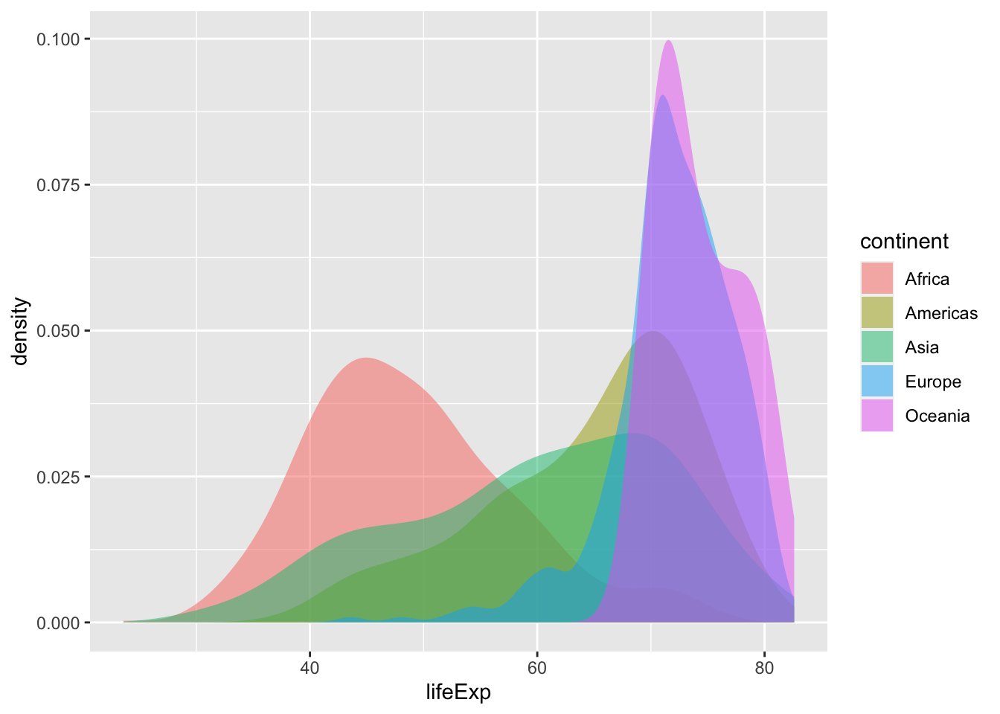

- Code
This is inline code plus a small code chunk.
── Attaching core tidyverse packages ──────────────────────── tidyverse 2.0.0 ──
✔ dplyr 1.1.2 ✔ readr 2.1.4
✔ forcats 1.0.0 ✔ stringr 1.5.0
✔ ggplot2 3.4.2 ✔ tibble 3.2.1
✔ lubridate 1.9.2 ✔ tidyr 1.3.0
✔ purrr 1.0.1
── Conflicts ────────────────────────────────────────── tidyverse_conflicts() ──
✖ dplyr::filter() masks stats::filter()
✖ dplyr::lag() masks stats::lag()
ℹ Use the conflicted package (<http://conflicted.r-lib.org/>) to force all conflicts to become errors
ggplot (mpg) + geom_jitter (aes (cty, hwy), size = 4 , alpha = 0.5 )
- Tabsets
Code
%>% ggplot (aes (body_mass_g, bill_length_mm, col = correct)) + geom_jitter (size = 4 , alpha = 0.6 ) + facet_wrap (vars (species)) + scale_color_manual (values = c ('grey60' , thematic:: okabe_ito (3 )[3 ])) + scale_x_continuous (breaks = seq (3000 , 6000 , 1000 )) + theme_minimal (base_size = 12 ) + theme (legend.position = 'top' , panel.background = element_rect (color = 'black' ),panel.grid.minor = element_blank ()+ labs (x = 'Body mass (in g)' ,y = 'Bill length (in mm)'
Code
<- glm (sex ~ body_mass_g + bill_length_mm + species, family = binomial, data = dat)<- dat %>% mutate (prob.fit = glm.mod$ fitted.values,prediction = if_else (prob.fit > 0.5 , 'male' , 'female' ),correct = if_else (sex == prediction, 'correct' , 'incorrect' )%>% ggplot (aes (body_mass_g, bill_length_mm, col = correct)) + geom_jitter (size = 4 , alpha = 0.6 ) + facet_wrap (vars (species)) + scale_x_continuous (breaks = seq (3000 , 6000 , 1000 )) + scale_color_manual (values = c ('grey60' , thematic:: okabe_ito (3 )[3 ])) + theme_minimal (base_size = 10 ) + theme (legend.position = 'top' , panel.background = element_rect (color = 'black' ),panel.grid.minor = element_blank ()+ labs (x = 'Body mass (in g)' ,y = 'Bill length (in mm)'
- Some math stuff
\int_0^1 f(x) \ dx
2 - Columns
geom_density (mapping = NULL ,data = NULL ,stat = "density" ,position = "identity" ,na.rm = FALSE ,orientation = NA ,show.legend = NA ,inherit.aes = TRUE ,outline.type = "upper"
stat_density (mapping = NULL ,data = NULL ,geom = "area" ,position = "stack" ,bw = "nrd0" ,adjust = 1 ,kernel = "gaussian" ,n = 512 ,trim = FALSE ,na.rm = FALSE ,orientation = NA ,show.legend = NA ,inherit.aes = TRUE
2 - Margin captions
ggplot (data = gapminder:: gapminder, mapping = aes (x = lifeExp, fill = continent)) + stat_density (position = "identity" , alpha = 0.5 )

Bla bla bla. This is a caption in the margin. Super cool isn’t it?
Start with running quarto create-project at ~/prj level
❯ quarto create-project qblog --type website:blogCreating project at /Users/zenn/Dropbox/prj/qblog:- Created _quarto.yml- Created index.qmd- Created posts/welcome/index.qmd- Created posts/post-with-code/index.qmd- Created about.qmd- Created styles.css- Created posts/_metadata.yml
cd to ~/qblog/posts/
create a new directory, say setupquarto
cd to ~/qblog/posts/setupquarto
vim index.qmd
Citation BibTeX citation:
@online{(ryy)glennthomas2023,
author = {Ronald (Ryy) Glenn Thomas},
title = {Setting up {Quarto}},
date = {2023-07-18},
url = {https://focusonr.org/posts/setupquarto},
langid = {en}
}
For attribution, please cite this work as:
Ronald (Ryy) Glenn Thomas. 2023.
“Setting up Quarto.” July
18, 2023.
https://focusonr.org/posts/setupquarto .
![]()